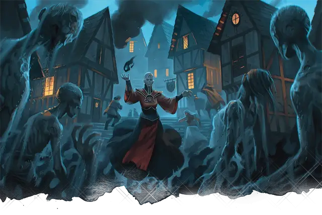

Пляска смерти
Danse Macabre
5 уровень, Некромантия

Время сотворения 1 действие
Дистанция 60 футов
Компоненты В, С
Длительность Концентрация, вплоть до 1 часа
Классы Волшебник, Колдун
Нити темной силы срываются с ваших пальцев, чтобы пронзить до пяти Маленьких или Средних трупов, которые вы можете видеть в пределах дистанции. Каждый труп немедленно встает и становится Нежитью. Вы решаете, становится ли он зомби [zombie] или скелетом [skeleton], и он получает бонус к атаке и броскам урона, равный модификатору вашей заклинательной характеристики.
Вы можете использовать бонусное действие, чтобы мысленно управлять существами, которых вы создали этим заклинанием, назначая одну команду сразу всем им. Чтобы получить команду, существо должно находиться в пределах 60 футов от вас. Вы решаете, какие действия предпримут существа и куда они будут двигаться в следующий ход, или вы можете выдать команду общего характера, например, охранять помещение или проход от ваших врагов.
Если вы не выдаете никаких команд, существа ничего не предпринимают, кроме самозащиты от враждебных существ. После получения команды существа продолжают следовать им, пока их задача не будет выполнена.
Существа находятся под вашим контролем до тех пор, пока заклинание не закончится, после чего они снова станут трупами.
На больших уровнях. Если вы накладываете это заклинание, используя ячейку заклинания 6-го уровня или выше, вы можете оживить до двух дополнительных трупов для каждого уровня ячейки выше 5-го.